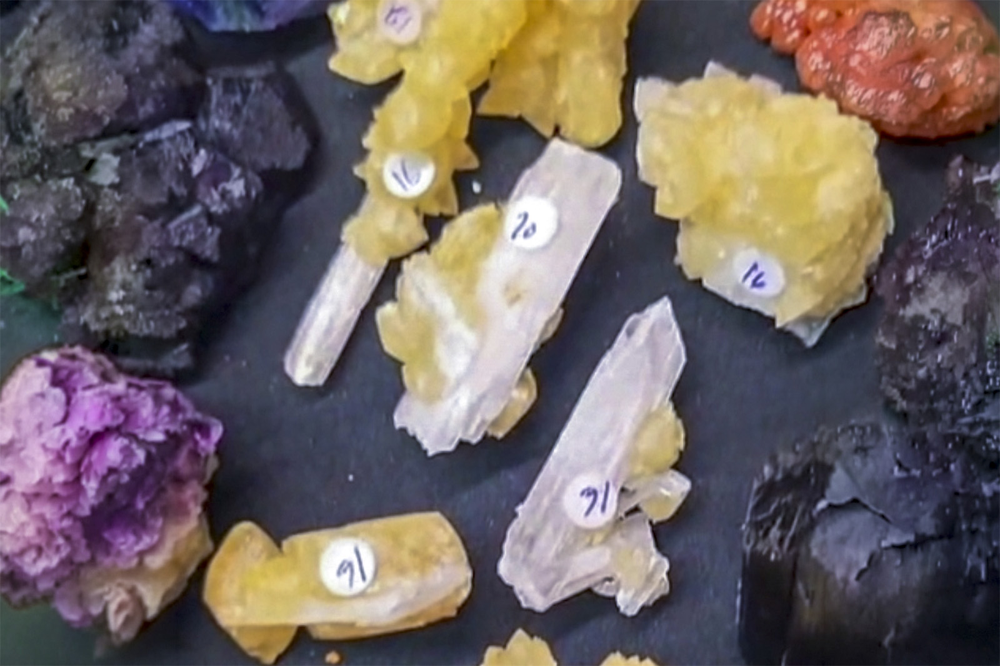

Calcite on Celestine Blades
"Calcite on Celestine 02"
V-10894
Clay Center, Allen Township, Ottawa County, Ohio, USA
Mined by Stan
Purchased 8/23/2026 from Virgo Gems for $23.44
Inventory • Received
Details
Storage Type: Unassigned
Storage Location: 000 None
Size class: Cabinet (0)
Dimensions: 4.9 × 2.4 × 2.2 cm
Mass: 29.35 g
Luster: Poor, Vitreous